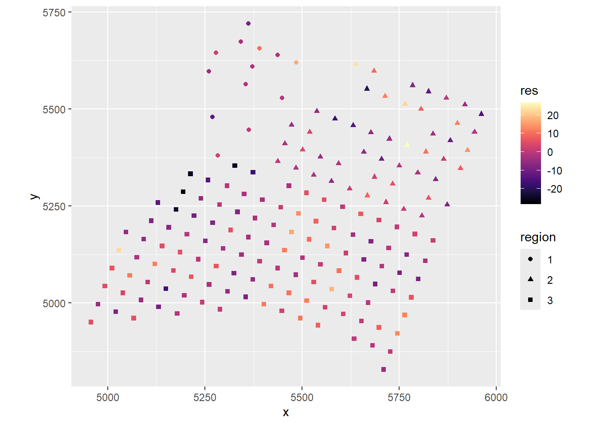
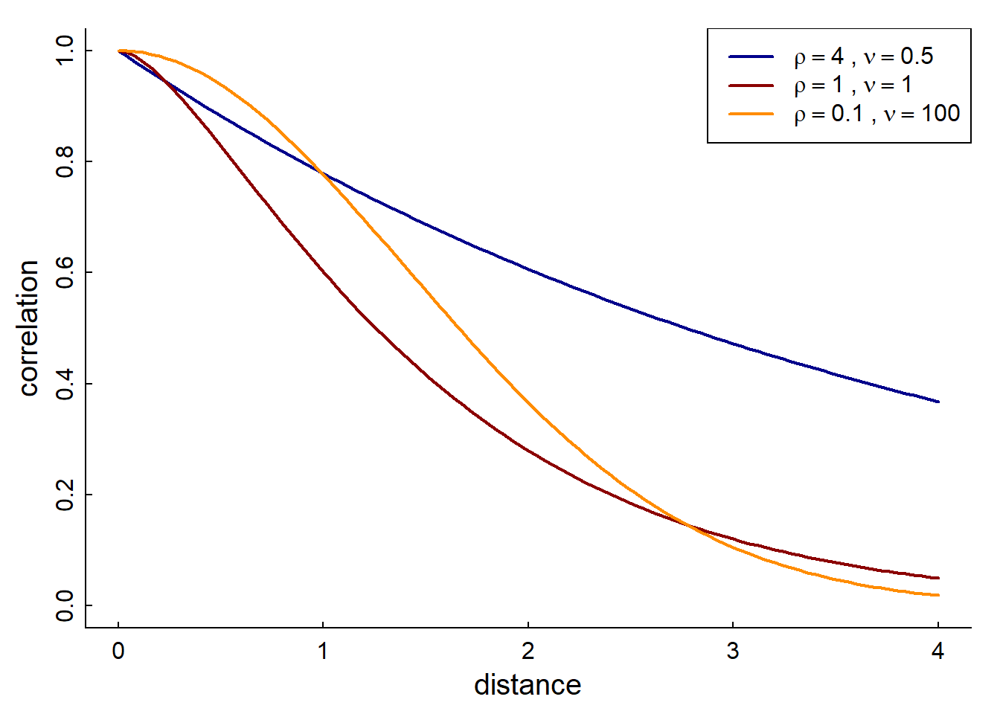
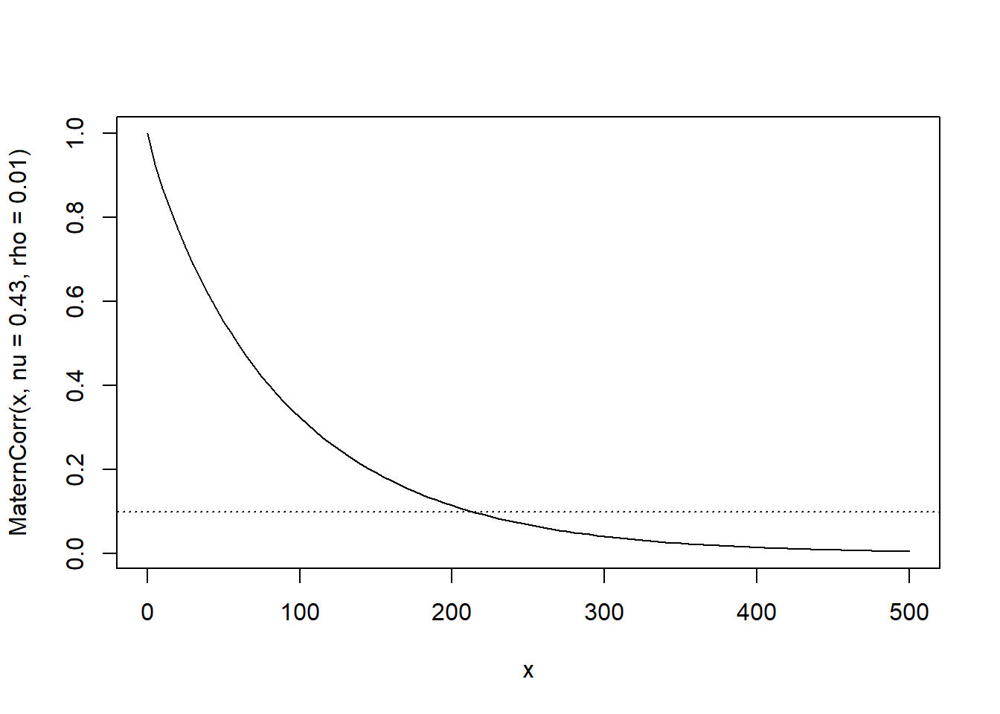
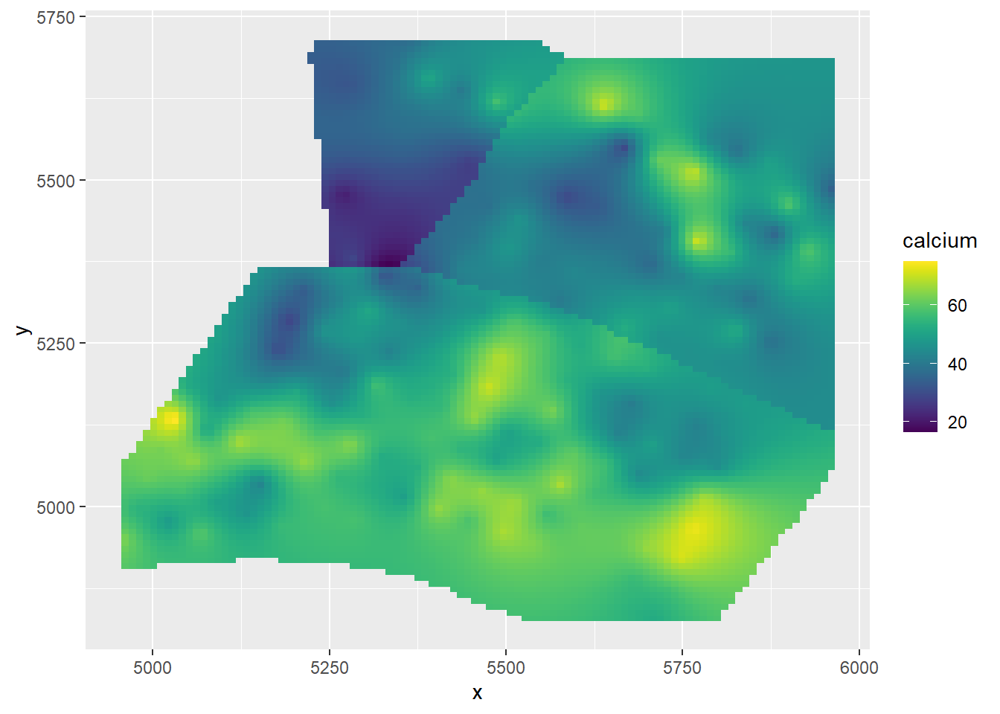

A linear model
Ca_lm <- lm(calcium ~ elevation * region, data = dat)
summary(Ca_lm)##
## Call:
## lm(formula = calcium ~ elevation * region, data = dat)
##
## Residuals:
## Min 1Q Median 3Q Max
## -28.3603 -5.0931 -0.4355 5.5786 26.7756
##
## Coefficients:
## Estimate Std. Error t value Pr(>|t|)
## (Intercept) 66.179 11.486 5.762 3.76e-08 ***
## elevation -6.425 2.403 -2.673 0.008235 **
## region2 -2.082 16.063 -0.130 0.897031
## region3 -69.182 17.980 -3.848 0.000168 ***
## elevation:region2 2.864 3.270 0.876 0.382361
## elevation:region3 16.237 3.374 4.812 3.25e-06 ***
## ---
## Signif. codes: 0 '***' 0.001 '**' 0.01 '*' 0.05 '.' 0.1 ' ' 1
##
## Residual standard error: 9.133 on 172 degrees of freedom
## Multiple R-squared: 0.3398, Adjusted R-squared: 0.3206
## F-statistic: 17.7 on 5 and 172 DF, p-value: 3.908e-14What are the main inferences?
It’s residuals
dat$res <- Ca_lm$residualsggplot(dat, aes(x, y, color = res, shape = region)) +
geom_point() +
scale_color_viridis(option = "A") +
coord_fixed()
There is definitely spatial autocorrelation in the residuals!If you want to obtain a statistical measure for spatial correlation, there is a Widely used statistic called Moran’s I.
\[ I = \frac{n}{s} \times \frac{\sum_{i} \sum_{j} w_{ij} (x_i - \bar{x}) (x_j - \bar{x})}{\sum_{i} (x_i - \bar{x})^2} \]
Where: - \(n\) = total number of observations - \(x_i, x_j\) = values at locations \(i\) and \(j\) - \(\bar{x}\) = mean of the variable - \(w_{ij}\) = spatial weight between locations \(i\) and \(j\) - \(s = \sum_{i} \sum_{j} w_{ij}\), the sum of all spatial weights
The weights between the locations represent a structural assumption about the nature of the relationship between points as a function of distance \(d_{ij}\). In practice, it is almost always of the from \(1/d_{ij}^p\), where \(p\) is either 1 or 2.
If \(I \approx 0\), there is no significant spatial autocorrelation. If the statistic is positive \(I > 0\), similar values cluster together, if it is negative (something I’ve never seen) dissimilar values are adjacent.
The ape::Moran.I() computes Moran’s I, but you have to
specify weights:
require(ape)
# compute distance metric
D.matrix <- dist(dat[,c("x","y")]) |> as.matrix()
w <- 1/D.matrix
# set diagonals to 0
diag(w) <- 0
Moran.I(dat$res, w)## $observed
## [1] 0.03825488
##
## $expected
## [1] -0.005649718
##
## $sd
## [1] 0.006872627
##
## $p.value
## [1] 1.677087e-10The inverse distance weights have a highly significant positive Moran’s I. Same for the squared distance:
Moran.I(dat$res, w^2)## $observed
## [1] 0.1205907
##
## $expected
## [1] -0.005649718
##
## $sd
## [1] 0.02000301
##
## $p.value
## [1] 2.77111e-10If you like prettier output (but less control) here’s a function in
the DHARMa package:
require(DHARMa)
testSpatialAutocorrelation(dat$res, dat$x, dat$y, plot=FALSE)##
## DHARMa Moran's I test for distance-based autocorrelation
##
## data: dat$res
## observed = 0.0382549, expected = -0.0056497, sd = 0.0068726, p-value =
## 1.677e-10
## alternative hypothesis: Distance-based autocorrelationOk, we definitely have correlated residuals. We need to take those into account. So, our model might look like:
\[Y = X\beta + \epsilon\]
where
\[\epsilon \sim {\cal N}(0, \Sigma)\]
What distinguishes this from a standard ordinarily squares regression is that the residuals are not independent, but correlated. Our task is to find a reasonable correlation structure.
For example, for the above, we might assume a spatial Gaussian correlation structure in the residuals that assumes:
\[\Sigma_{ij} = \sigma^2 \, Cor(r_i,r_j) = \sigma^2 (1-\nu) \exp\left(-(d_{ij} / \delta)^2 \right)\]
Where \(d_{ij} = ||z_i - z_j||\) is the distance between the two residuals. There are now three parameters to estimate in the \(\Sigma\): the overall variance \(\sigma^2\), the “nugget” \(0 \leq \nu \leq 1\) and the distance scale \(\delta > 0\). The nugget captures the variation among points sampled int the same location (where \(\delta_{ij} = 0\)) - if it equal to 0 we assume all the observations at a given location is the same. The \(\delta\) is the distance parameter - it captures the spatial scale of autocorrelation.
gls)Generalized Least Squares is an efficient matrix-inversion based statistical method (as you might guess it generalizes the standard least squares approach with a fancier \(\Sigma\)) for estimating exactly this model. It is efficient and exact - unfortunately it only works on Gaussian models.
Here’s an example.
require(nlme)
Ca_gls_gauss <- gls(calcium ~ elevation * region,
correlation = corGaus(1, ~ I(x/100) + I(y/100), nugget = TRUE),
data = dat)
summary(Ca_gls_gauss)## Generalized least squares fit by REML
## Model: calcium ~ elevation * region
## Data: dat
## AIC BIC logLik
## 1250.789 1279.116 -616.3945
##
## Correlation Structure: Gaussian spatial correlation
## Formula: ~I(x/100) + I(y/100)
## Parameter estimate(s):
## range nugget
## 0.5568721 0.1761542
##
## Coefficients:
## Value Std.Error t-value p-value
## (Intercept) 55.28398 13.221775 4.181283 0.0000
## elevation -3.96324 2.613188 -1.516629 0.1312
## region2 5.10573 20.015049 0.255095 0.7990
## region3 -47.20941 22.935333 -2.058370 0.0411
## elevation:region2 1.06267 3.942516 0.269540 0.7878
## elevation:region3 11.84809 4.112586 2.880935 0.0045
##
## Correlation:
## (Intr) elevtn regin2 regin3 elvt:2
## elevation -0.972
## region2 -0.652 0.630
## region3 -0.565 0.545 0.352
## elevation:region2 0.634 -0.650 -0.983 -0.334
## elevation:region3 0.605 -0.619 -0.379 -0.986 0.383
##
## Standardized residuals:
## Min Q1 Med Q3 Max
## -2.95482414 -0.48688629 -0.03463241 0.60893645 2.87029479
##
## Residual standard error: 9.400885
## Degrees of freedom: 178 total; 172 residualNote, I had to divide the X in my coordinates by a 100 in order to make the algorithm work. Lots of good information here. Look at the results and answer The following questions:
The exponential spatial correlation looks just like the Gaussian one, except it isn’t squared.
\[\Sigma_{ij} = \sigma^2 \, Cor(r_i,r_j) = \sigma^2 (1-\nu) \exp\left(-d_{ij} / \delta \right)\]
require(nlme)
Ca_gls_exp <- gls(calcium ~ elevation * region,
correlation = corExp(1, ~ I(x/100) + I(y/100), nugget = TRUE),
data = dat)
summary(Ca_gls_exp)## Generalized least squares fit by REML
## Model: calcium ~ elevation * region
## Data: dat
## AIC BIC logLik
## 1246.11 1274.437 -614.0549
##
## Correlation Structure: Exponential spatial correlation
## Formula: ~I(x/100) + I(y/100)
## Parameter estimate(s):
## range nugget
## 1.1725469 0.1585413
##
## Coefficients:
## Value Std.Error t-value p-value
## (Intercept) 53.32160 15.393860 3.463823 0.0007
## elevation -2.49907 2.779489 -0.899110 0.3699
## region2 -12.50173 23.528630 -0.531341 0.5959
## region3 -36.13745 25.569560 -1.413300 0.1594
## elevation:region2 3.48074 4.302498 0.809005 0.4196
## elevation:region3 8.71906 4.406387 1.978733 0.0494
##
## Correlation:
## (Intr) elevtn regin2 regin3 elvt:2
## elevation -0.943
## region2 -0.619 0.561
## region3 -0.601 0.579 0.371
## elevation:region2 0.574 -0.570 -0.973 -0.313
## elevation:region3 0.589 -0.624 -0.354 -0.978 0.332
##
## Standardized residuals:
## Min Q1 Med Q3 Max
## -2.48364728 -0.52071961 -0.02756801 0.55888847 2.49242099
##
## Residual standard error: 10.79667
## Degrees of freedom: 178 total; 172 residualNote how the range and nugget changed.
We can compare these two spatial correlation structures:
AIC(Ca_gls_exp, Ca_gls_gauss)## df AIC
## Ca_gls_exp 9 1246.110
## Ca_gls_gauss 9 1250.789There is some evidence that the exponential model is better one. But is there a better way to determine this? Or a more flexible spatial correlation structure?
Why yes! Is is the …..
A more generalized form of spatial autocorrelation is the Matérn covariance function. Before we get into it, here are the only pictures I could find of Bertil Matérn (1917-2007) - the Swedish forestry statistician for whom this covariance structure is named:
From these, we can infer that he never changed his expression or glasses style in 7 decades. However, he must have been relieved when the top of his head grew back, after being presumably blown away by this thing:
\[C_\nu(d) = \sigma^2\frac{2^{1-\nu}}{\Gamma(\nu)}\Bigg(\sqrt{2\nu}\frac{d}{\rho}\Bigg)^\nu K_\nu\Bigg(\sqrt{2\nu}\frac{d}{\rho}\Bigg)\]
This is the Matérn distance function. It’s not that important to know what \(\Gamma\), \(K\), etc. are (you can dig into it )

The parameter \(\mu\) is refered to
as “smoothness”, and \(\rho\) is the
“scale” (similar to \(\delta\) above).
At \(\nu = 1/2\) it is exponential. At
\(\nu \to \infty\) it is Gaussian. But
it is generally quite flexible. So if you don’t want to pre-specify that
shape, the Matern approach will allow you to estimate both those
parameters. Here’s an example using the spaMM package:
library(spaMM)
m_spamm <- fitme(calcium ~ elevation * region + Matern(1 | x + y),
data = dat, family = "gaussian")
# model summary
summary(m_spamm)## formula: calcium ~ elevation * region + Matern(1 | x + y)
## ML: Estimation of corrPars, lambda and phi by ML.
## Estimation of fixed effects by ML.
## Estimation of lambda and phi by 'outer' ML, maximizing logL.
## family: gaussian( link = identity )
## ------------ Fixed effects (beta) ------------
## Estimate Cond. SE t-value
## (Intercept) 52.561 13.718 3.8317
## elevation -2.937 2.613 -1.1242
## region2 -2.714 20.959 -0.1295
## region3 -38.370 23.703 -1.6188
## elevation:region2 2.145 3.993 0.5372
## elevation:region3 9.709 4.174 2.3262
## --------------- Random effects ---------------
## Family: gaussian( link = identity )
## --- Correlation parameters:
## 1.nu 1.rho
## 0.44908106 0.01530941
## --- Variance parameters ('lambda'):
## lambda = var(u) for u ~ Gaussian;
## x + y : 90.21
## # of obs: 178; # of groups: x + y, 178
## -------------- Residual variance ------------
## phi estimate was 0.00499297
## ------------- Likelihood values -------------
## logLik
## logL (p_v(h)): -626.335So - here we have estimates: \(\nu = 0.43\) and \(\rho = 0.0116\). What does that look like?
curve(MaternCorr(x, nu = 0.43, rho = 0.01), xlim = c(0,500))
abline(h = 0.1, lty = 3)
The \(\nu\) is quite close to 1/2, so the spatial correlation is approximately exponential. Note that even at 200 m distance, there is still something like a 10% correlation in the residuals.
This is a terrific plot. The code was cheerfully stolen from this blog post.
library(fields)
library(raster)
# derive a DEM
elev_m <- Tps(dat[,c("x","y")], dat$elevation)## Warning:
## Grid searches over lambda (nugget and sill variances) with minima at the endpoints:
## (GCV) Generalized Cross-Validation
## minimum at right endpoint lambda = 5.669116e-06 (eff. df= 169.1 )## Warning:
## Grid searches over lambda (nugget and sill variances) with minima at the endpoints:
## (GCV) Generalized Cross-Validation
## minimum at right endpoint lambda = 5.669116e-06 (eff. df= 169.1 )
r <- raster(xmn = 4950, xmx = 5970, ymn = 4800, ymx = 5720, resolution = 5)
elev <- interpolate(r, elev_m)
# for the region info use the limits given in ca20
pp <- SpatialPolygons(
list(Polygons(list(Polygon(ca20$reg1)), ID = "reg1"),
Polygons(list(Polygon(ca20$reg2)), ID = "reg2"),
Polygons(list(Polygon(ca20$reg3)), ID = "reg3")))
region <- rasterize(pp, r)
# predict at any location
newdat <- expand.grid(x = seq(4960, 5960, length.out = 100),
y = seq(4830, 5710, length.out = 100))
newdat$elevation <- extract(elev, newdat[,1:2])
newdat$region <- factor(extract(region, newdat[,1:2]))
# remove NAs
newdat <- na.omit(newdat)
# predict
newdat$calcium <- as.numeric(predict(m_spamm, newdat))
(gg_spamm <- ggplot(newdat,aes(x=x, y=y, fill = calcium)) +
geom_raster() +
scale_fill_viridis())